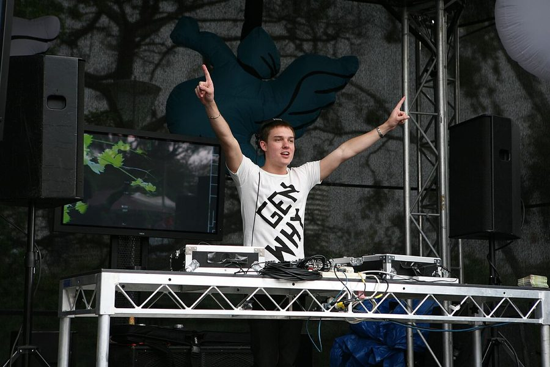

ITM Exclusive: Global Gathering makes its mighty pilgrimage to Australia!



Been waiting anxiously all week to discover which ‘world renowned international festival’ will be coming to Australia before the end of the year? ITM can exclusively reveal that UK mega-festival Global Gathering will be making its way across Australia this November, meaning we’ll get to experience one of the world’s most loved dance and live music events before 2008 comes to a close.
The Australian debut of Global Gathering will be a joint venture between festival founder Angel Music Group, alongside Future Entertainment and Ministry Of Sound Australia, and the respective parties claim the tour could very well be “the biggest venture of its kind in Australia to date,” as well as “a milestone for festival culture in Australia”. Will it live up to the unbeatable reputation attached to its UK counterpart? Details are scarce at this stage as far as dates, venues and lineups are concerned, but the organisers promise all will be revealed over the coming weeks.
The legacy of Global Gathering is known to more than a few Australian dance music fans, with storming live sets having been broadcast worldwide since its launch in 2001. It really is looked to as the pinnacle of international dance festivals. Every year over 50,000 excited punters congregate at the Long Marston Airfield in the final weekend of July, making it the biggest dance weekender of the European summer. The Angel Music Group are coming hot off the heels of their most successful event yet, with attendance exceeding 55,000 at the 2008 event, and a smokin’ lineup that saw Kanye West, Moby and Mark Ronson playing live, along with DJ headliners like Armin Van Buuren, John Digweed, Roger Sanchez, Above & Beyond and many, many more.
Global Gathering has made the pilgrimage to six different countries outside the UK this year, and Angel Music Group promise that special care will be taken with each international event to mould it to the local market, meaning it’ll offer the best possible lineup of musical talent, the highest production values and an party that’s a true reflection of the original UK festival. Roger Sanchez had this to say after playing this year’s UK event; “Simply the best electronic music festival in the world, bar none.”
Wanna know more? Stay tuned to ITM’s Festival Page for full details of lineup, venues and dates as soon as they come to hand!